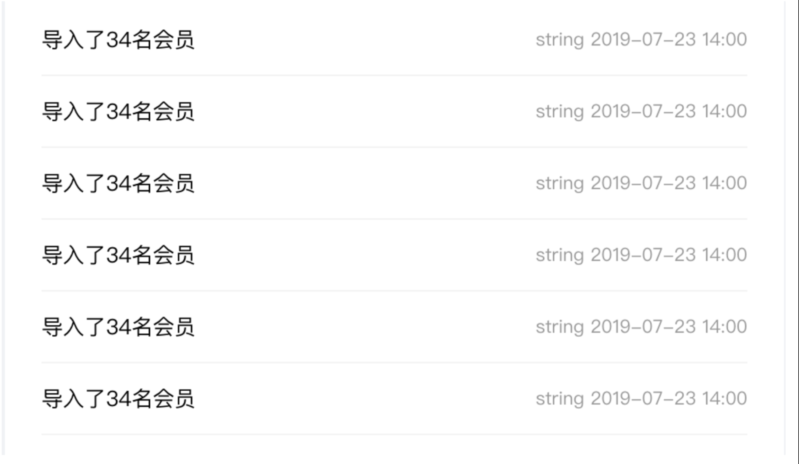
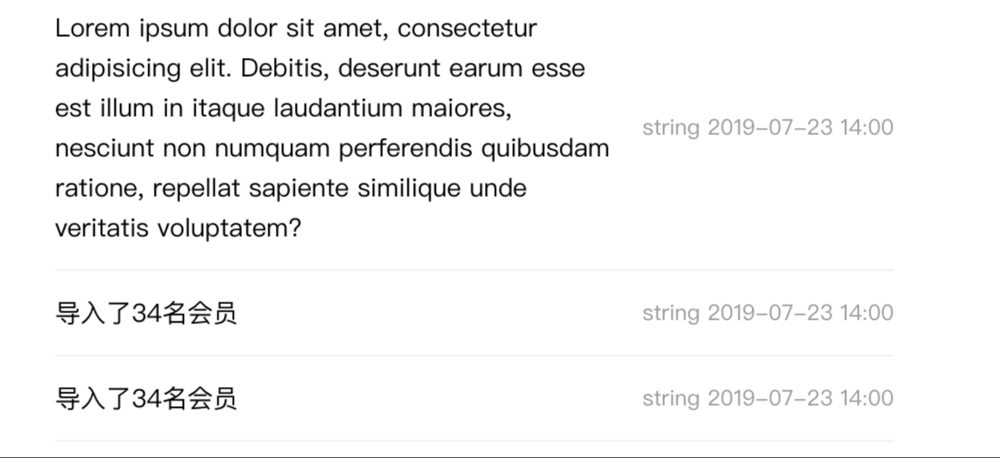

第2节：加强版 list
在一些新闻门户网站，会遇到这样的需求：

左侧是标题，右侧会有时间注解，看似很平常，但是有一个很严肃的问题：如果左侧内容过多，该如何显示？理想状态是不是：

左侧部分的内容变得再长也不会影响到右侧的时间显示，并且右边的时间显示在行中。
左右两侧分开显示 so easy，但是怎么能做到右侧的部分垂直居中呢？
单行元素垂直居中？简单，line-height 等于…. 等于…. 等于什么？父元素高度不固定怎么等于！❌
利用显式幽灵元素居中？ :before{height:100%} 在左侧元素浮动的时候幽灵节点根本获取不到父元素的高度！❌
那应该如何做才能保持右边部分居中并且左边的内容也自适应呢？这里需要用到我们告诉大家垂直居中的第一种方式了——table-cell（但是使用 table-cell 的时候不能使用 margin 哦。
当然如果在不要求兼容 ie9 的情况下，使用 flex 布局是更优的选择
但是很明显，左侧的 title 过长时显示的内容过高并不是很美观，我们想使 title 过长时只显示前面的内容，后面的内容用省略号替代，该如何实现呢？